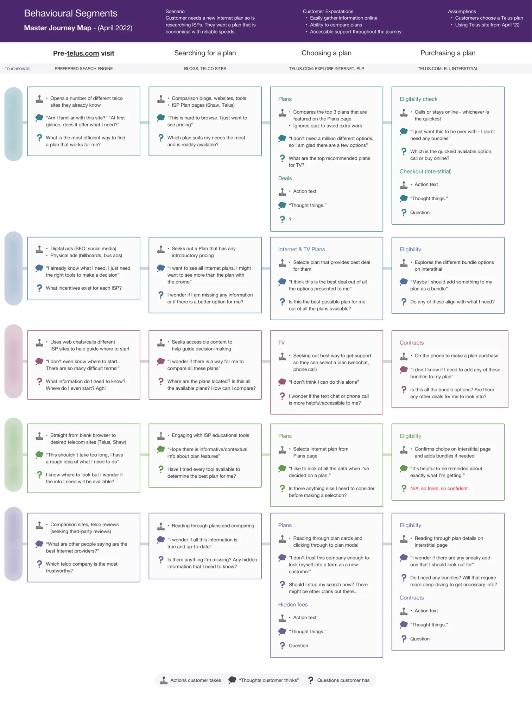
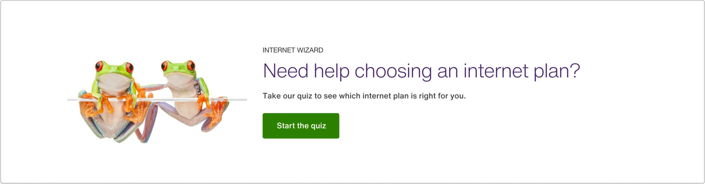
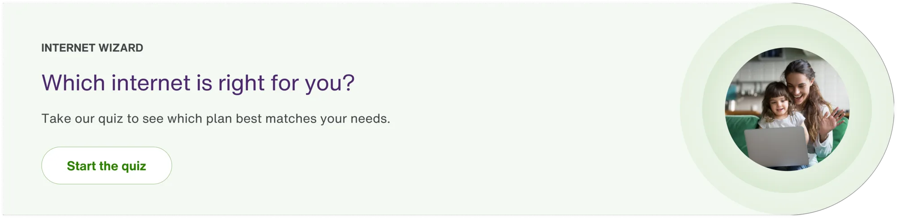
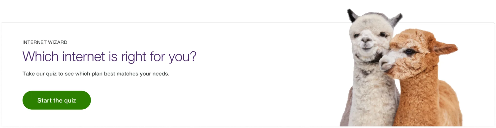
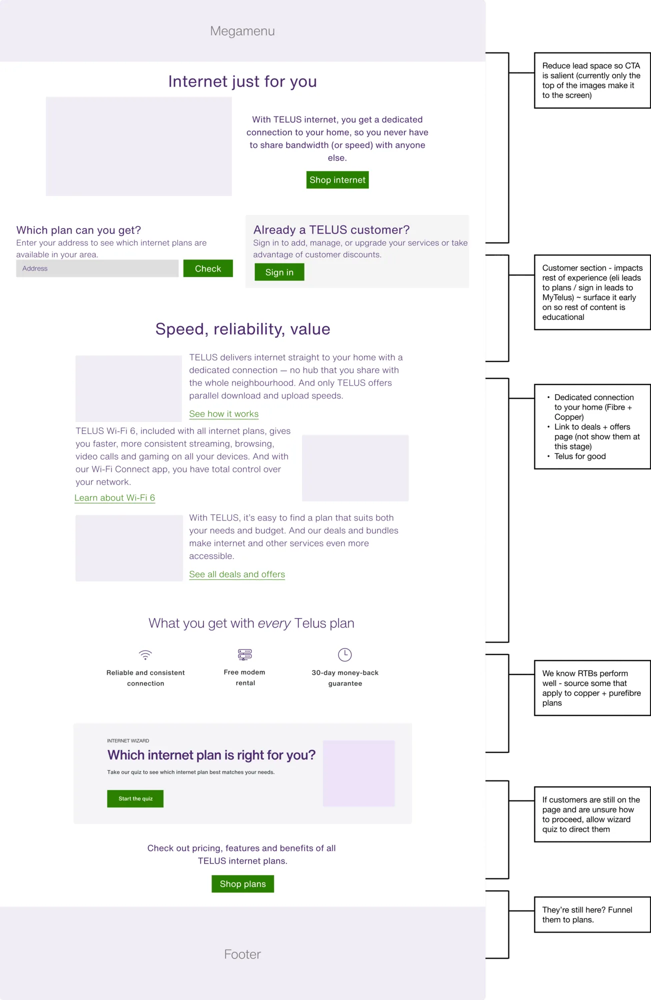
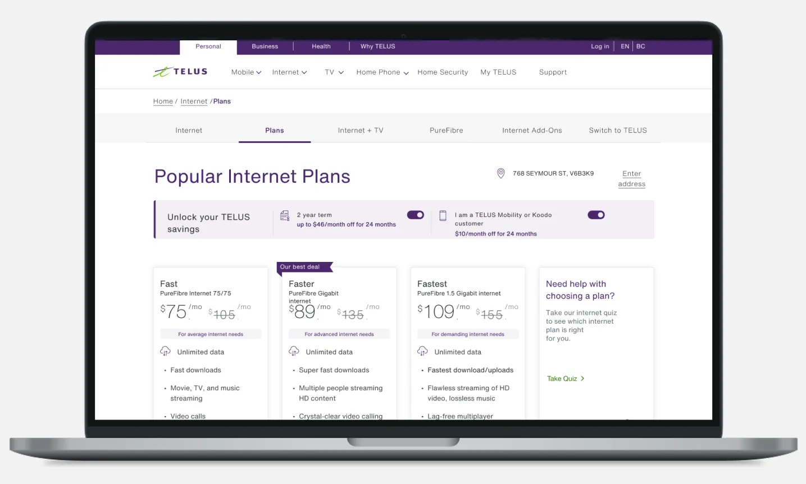

Telus: Plans Page (Informing Customers)
All Purpose Creative was a preferred vendor for Telus Canada, an enterprise level telecommunications company. This project became part of a larger initiative to increase their internet product sales. We were tasked with helping to convert prospective customers to Telus internet products via their Plans Page.

Ask
Combined with Telus's internet wayfinding, the Plans Page itself needed some restructuring to surface relevant information and key interactions.
Analytics supplied by the client revealed that, once landing on the Plans Page, prospective customers were dropping off too soon without making a purchase and were rarely engaging with the page.
This implied they were either not getting the information they needed or they were not confident enough to make a commitment to a plan.
Highlight/s
One key design decision that Mike, Marie, and I worked closely on was weaving educational elements throughout. This was to ensure users were buying internet plans that served them, in an attempt to avoid dark patterns.
Contribution
- Assessed the behavioural segments supplied by the client and reworked a user journey for each segment based on their research and analytics
- Outlined a number of ways to layer educational elements into their card design (e.g. modals, tooltips, popovers), applying their existing design system (Allium)
- Explored different ways to structure the Plans Page, surfacing more actionable, decision-based elements
- Partnered with a user researcher to run A/B tests validating the new structure pre-launch
Results
engagement*
*User researchers rationalized this as users getting the info they need in the context of other data (entering the purchase funnel etc.)
Project media
Here are some key artefacts from the project, with captions explaining each of them.





